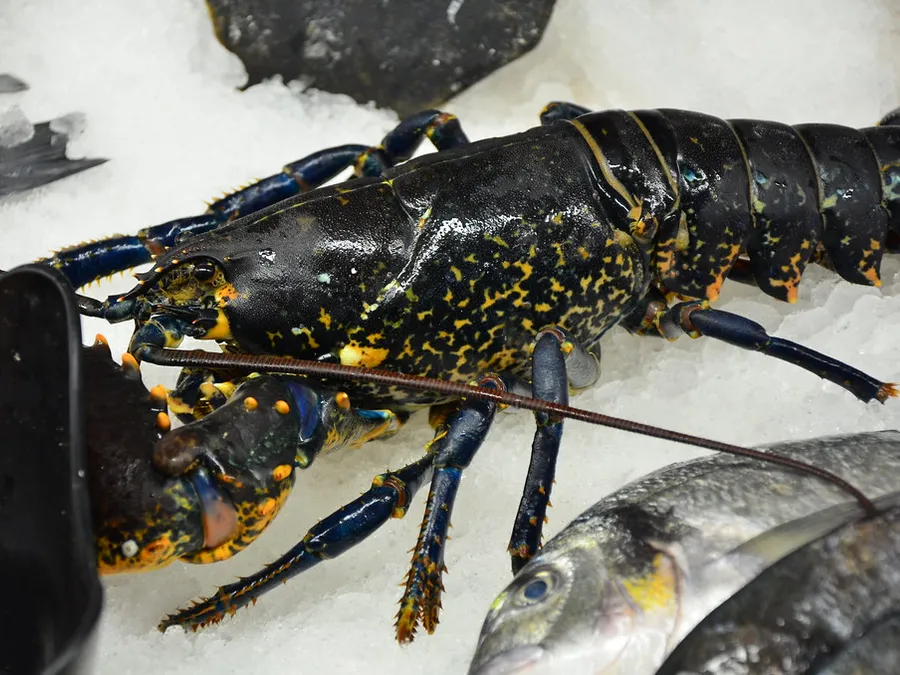

Astice
Canadese e americano sempre in vasca, il blu di Bretagna su ordinazione. Si ordinano a pezzo e arrivano vivi: quello che sale sul furgone è quello che avete scelto.
Pezzature
400/600600/800800+
Provenienza
Chiedi disponibilità e prezzo
CanadaStati UnitiBretagna